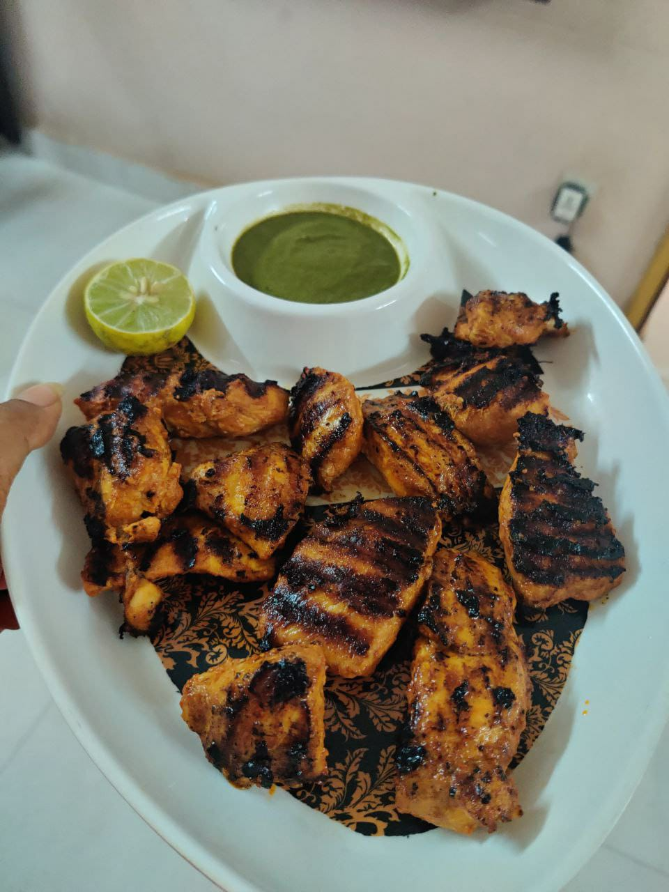

Chicken Tikka

Ingredients
- 750 grams chicken
- Salt to taste
- 1.5 nos Lemon
- 1/2 tbsp ginger paste
- 1/2 tbsp ginger garlic paste
- 7.5 tsp Mustard oil
- 1.5 tbsp Kashmiri chilli powder
- 1.5 cup Curd
- Chat Masala
- 1/2 tsp Methi leaves Powder
Method of Preperation
- Pat dry the chicken and mic it with sprinkle salt, lemon juice, ginger and garlic paste.Keep it aside for an hour.
- Meanwhile pour mustard oil in a fresh bowl and add Kashmiri chilli powder to it. Stir and add thick curd, lemon uice,salt,ginger paste, garlic paste and methi leaves powder.Mix it and keep aside
- Now squeeze netween your palm the chicken to remove and excess moisture.
- Place the chicken pieces in the second marinade mix to coat the chicken evenly.
- Heat the grill pan to high. Lightly oil it and place the chicken peices on the pan.
- Within 2-3 mins turn over to get grill marks on the other side as well
- Your chicken Tikka is ready to be served